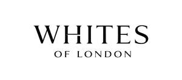

Trade Mark Journal No.2026/006 6 February 2026
UK00004328523 22 January 2026 (24,25)

- Class 24
- Duvet covers; Pillow covers; Mattress covers; Covers for pillows; Bed covers; Cushion covers; Covers for cushions; Cushions (Covers for -); Valanced bed covers; Quilt covers; Textile covers for duvets; Covers for mattresses; Cot covers; Cushion covering materials; Pillowcases [pillow slips]; Shams (Pillow -); Table covers; Bed linen; Linen for the bed; Linen (Bed -); Bed linen and table linen; Bed linen and blankets; Infants' bed linen; Linen; Bath linen; Bed clothes; Bed clothes and blankets; Fitted bed sheets; Bed quilts; Flat bed sheets; Bed coverings; Bed linen made of non-woven textile material; Table linen; Linen [fabric]; Linens; Bath linen, except clothing; Terry linen; Household linen; Linen (Household -); Textile napkins [table linen]; Sofa blankets; Bed throws; Quilted blankets [bedding]; Woven linen fabrics; Valence linen; Textiles made of linen; Bed spreads; Coasters [table linen]; Kitchen towels of cloth; Bed warmer covers; Bedsheets; Valances for beds; Ticks (mattress and pillow coverings); Textile smallwares [table linen]; Kitchen towels [textile]; Kitchen towels of textile; Linen lining fabric for shoes; Table linen, not of paper; Comforters (bedding); Kitchen and table linens; Bedsheets of leather; Bath sheets; Silk blankets; Valance sheets; Lingerie fabrics; Lingerie fabric; Towelling [textile]; Bedroom textile fabrics; Silk bed blankets; Woollen fabrics; Textile fabrics for use in the manufacture of bedding; Bed blankets; Cot bumpers [bed linen]; Crib sheets; Household linens; Bedspreads; Valanced bed sheets; Duvets; Cot blankets; Cot sheets; Furnishing fabrics; Silk fabrics for furniture; Furnishing and upholstery fabrics; Pillowcases; Bathroom towels; Towel sheet; Turkish towel; Towels; Bath towels; Kitchen towels; Bath sheets (towels); Hand towels; Terry towels; Face towels; Beach towels; Tea towels; Yoga towels; Face cloths of towelling; Face towels of textile; Turkish towels; Towels of textile; Towels [textile]; Towels [of textile]; Face towels of textiles; Textile hair drying towels; Cloth napkins; Household linen, including face towels; Curtains; Curtains for windows; Window curtains; Fabric curtains; Lace curtains.
- Class 25
- Pyjamas; Pajamas; Pyjamas [from tricot only]; Baby doll pyjamas; Nightwear; Nightdresses; Knitted underwear; Trousers; Bed socks; Nighties; Underpants; Nightshirts; Nightgowns; Trousers shorts; Underwear; Sleep shirts; Sleep pants; Pajamas (Am.); Briefs [underwear]; Maternity underwear; Pajama bottoms; Slippers; Lounging robes; Knickers; Woollen socks; Underclothes; Teddies; Dungarees; Trousers for sweating; Sleepwear; Woollen tights; Bath slippers; Lounge pants; Sleepsuits; Sweat-absorbent underclothing [underwear]; Shorts [clothing]; Sleeping garments; Maternity sleepwear; Loungewear; Clothes; Dresses for evening wear; Maternity shorts; Dress shirts; Night shirts; Short-sleeved shirts; Short-sleeved T-shirts; Long-sleeved shirts; Cardigans; Knitted baby shoes; Knitted clothing; Casual trousers; Baby clothes; Cashmere clothing; Baby pants; Maternity leggings; Knit shirts; Socks; Lingerie; Camisoles; Underwear for women; Housecoats; Knitwear; Swimwear; Corsets [underclothing]; Gymwear; Chemise tops; Underclothing for women; Hosiery; Silk clothing; Beachwear; Maternity clothing; Ready-to-wear clothing; Maternity dresses; Bodysuits; Denims [clothing]; Bralettes; Linen clothing; Men's clothing; Babies' undergarments; Clothing for leisure wear; Undershirts; Slips [undergarments]; Evening dresses; Clothing; Clothing for infants; Knitwear [clothing]; Woolen clothing; Furs [clothing]; Layettes [clothing]; Gloves [clothing]; Gloves as clothing; Jerseys [clothing]; Embroidered clothing; Casual clothing; Bottoms [clothing]; Playsuits [clothing]; Ready-made clothing; Infant clothing; Woven clothing; Leisure clothing; Clothing for children; Clothing for babies; Beach clothing; Chemises; Undergarments; Shapewear; Swimsuits; Baby shoes; Baby bottoms; Footwear; Flip-flops for use as footwear; Footwear for women; Footwear for men; Slipper socks; Fur hats; Fur cloaks; Fur muffs; Fur coats; Fur jackets; Clothing made of fur.
Whites of London Ltd